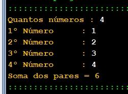

| Exercício | Dificuldade | Pontos | Data limite | Créditos |
| Ficha05_033
|
Avaluation test |
10.0 |
26/09/2022 16:02:00 |
(c)M@nso 2021 |
Soma dos pares
Construa um algoritmo que solicite ao utilizador calcule a soma de todos os números pares introduzidos pelo utilizador.
A quantidade de números também deve ser solitada.

| Input |
Output |
| 4
1
2
3
4 |
|
| 1
9
17
10 |
|
| 3
18
15
2 |
|
| 4
12
16
20
6 |
|
| 5
19
20
9
7
3 |
|
| 1
20
6
11 |
|
| 3
13
8
16 |
|
| 4
13
15
4
2 |
|
| 5
9
7
13
17
4 |
|
| 1
10
13
18 |
|
Algorithmi 22.05 Student version
(c) Antonio M@nso 2022
Instituto Politécnico de Tomar - All rights reserved